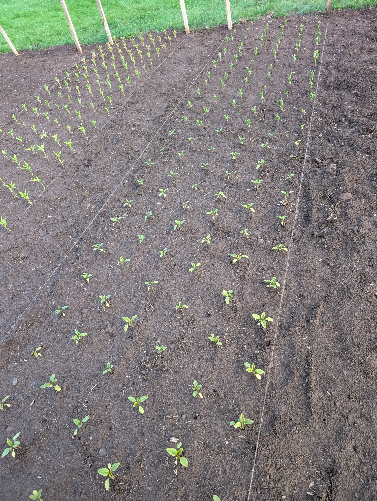

Welcome to Pax Petals
About Us
About: A family-run flower farm in Somers, CT. We grow and sell fresh, seasonal flowers with love and care, from our land to your hands.
Mission: To cultivate beauty, joy, and connection through sustainably grown flowers and heartfelt service, rooted in our family values and soil of Somers, CT.
Contact
Email: pax.petals@gmail.com
Call or Text: (860) 292-0047
Instagram: @paxpetals_flowerfarm